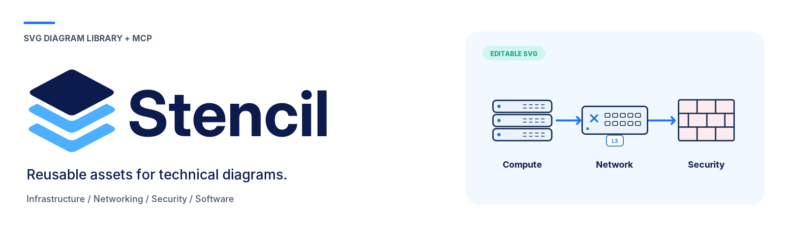

Icon library
324 individual SVGs, 20 categories, stable IDs, metadata and connection anchors.
Open searchable gallery →
324 individual SVGs, 20 categories, stable IDs, metadata and connection anchors.
Open searchable gallery →Layered logo, mint/dark/light avatars, README banner, social artwork and machine-readable colors.
Open brand pack →Local server, 12 tools, 24 example scenes and editable SVG renders.
Setup and file map →
Original icon sheets, selected logo concept and MRC revisions, including the untouched earlier package.
Reference inventory →What is implemented, proposed trunk/VLAN notation, reproducibility notes and test results.
Coverage · Validation reportStencil v0.2.2 · local/offline package · no fonts or external web assets bundled.